Agenda : Roadmap for the Future of Blockchain Technology
The G7 Advisory Committee comprises government officials and private representatives that have been tasked with providing the world with a Roadmap For the Future of Blockchain Technology. Blockchain tech aims to revolutionize all existing administrative and financial systems and is already starting to gain traction in its nascent stages. However, its potential threats weigh as heavily as its merits. The search for a perennial and substantial power source to facilitate the existence of cryptocurrencies continues with no evident breakthroughs. The shift to a pseudo world, the metaverse, comes with its own implications and the authenticity of Decentralized Autonomous Organizations remains under severe scrutiny. This new form of technology, under the patronage of private institutions, runs on the idea of decentralisation which goes against the very concept of governance. The battle to reach a middle ground must continue for the holistic development of this world. Delegates must decide- is blockchain the next step in human evolution or a mere fallacy?
 
